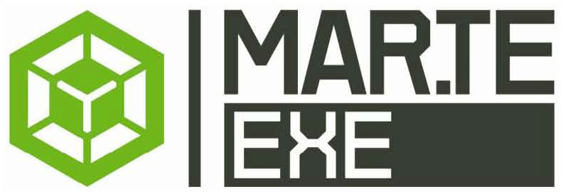
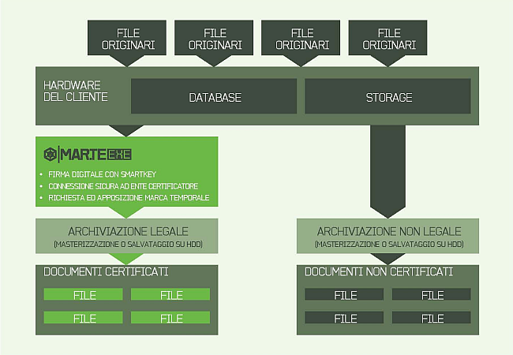

QUALITY AND SAFETY
Mar.teEXETM
LA CHIAVE DELLA TUTELA LEGALE
DEI DOCUMENTI
Il mezzo più efficiente per archiviare file o documenti di grandi dimensioni in forma legalmente riconosciuta è immediato e funzionale come una Smart Key.
Si chiama Mart.teExeTM ed è lo strumento esclusivo che Quality and Safety ha sviluppato per favorire la gestione rapida e soprattutto sicura degli archivi informatici, attraverso il processo di Archiviazione Sostitutiva dei documenti digitali. Con particolare riferimento agli archivi composti in prevalenza di file di grandi dimensioni, come può accadere nell’ambito della Sanità e dei Servizi di Sicurezza. In altre parole, si tratta di un software che dà la chiave d’accesso ad una vera e propria “cassaforte informatica”, riservata ai documenti strategici per l’operatività aziendale. Una cassaforte che viene blindata tramite l’apposizione di una Firma Digitale e di un sigillo, la Marca Temporale, rilasciati da Enti Certificatori come Infocert, Actalis, Postecom. Grazie a Mart.teExeTM i documenti vengono protetti e preservati presso il Cliente con l’uso delle attrezzature informatiche disponibili, lasciando libera scelta sulla tipologia dei supporti fisici di memorizzazione da adottare, come il CD, il DVD, l’Hard Disk o l’eventuale ausilio di sistemi robotizzati.
Si chiama Mart.teExeTM ed è lo strumento esclusivo che Quality and Safety ha sviluppato per favorire la gestione rapida e soprattutto sicura degli archivi informatici, attraverso il processo di Archiviazione Sostitutiva dei documenti digitali. Con particolare riferimento agli archivi composti in prevalenza di file di grandi dimensioni, come può accadere nell’ambito della Sanità e dei Servizi di Sicurezza. In altre parole, si tratta di un software che dà la chiave d’accesso ad una vera e propria “cassaforte informatica”, riservata ai documenti strategici per l’operatività aziendale. Una cassaforte che viene blindata tramite l’apposizione di una Firma Digitale e di un sigillo, la Marca Temporale, rilasciati da Enti Certificatori come Infocert, Actalis, Postecom. Grazie a Mart.teExeTM i documenti vengono protetti e preservati presso il Cliente con l’uso delle attrezzature informatiche disponibili, lasciando libera scelta sulla tipologia dei supporti fisici di memorizzazione da adottare, come il CD, il DVD, l’Hard Disk o l’eventuale ausilio di sistemi robotizzati.

LA GARANZIA È DIGITALE,
IL VANTAGGIO REALE
Mar.teExeTM si configura come l’indispensabile tramite per approdare a una gestione full digital delle procedure di archiviazione. Con tutti i vantaggi che ne derivano.
Il tutto viene gestito tramite una comune interfaccia web.
- Certifica e protegge i documenti rendendoli immodificabili e blindati.
- Gestisce un processo legalmente garantito, che realizza ciò che prevede la norma per la dematerializzazione documentale (Delibera CNIPA 19/02/2004, n. 11/2004 e sue precedenti).
- Consente un considerevole risparmio degli spazi fisici e l’eliminazione delle inefficienze legate alla gestione fisica della carta (Paperless Process Management). Senza dimenticare il notevole risparmio di carta, con il corrispondente beneficio sia in termini economici che ambientali.
- Offre la possibilità di certificare e gestire categorie documentali distinte, soprattutto quando i documenti risultano particolarmente corposi in termini informatici. È il caso, ad esempio, delle immagini: in ambito sanitario delle immagini radiologiche, cardiologiche; in ambito della sicurezza e videosorveglianza delle immagini relative al controllo degli accessi alle aree riservate o alle infrazioni semaforiche.
Il tutto viene gestito tramite una comune interfaccia web.
ACCESSIBILITÀ E INTEGRITÀ
AI MASSIMI LIVELLI
Mar.teExeTM rappresenta uno strumento completo, ricco di funzionalità, molto facile da utilizzare in virtù della sua semplice configurazione.
La massima efficienza e agilità operativa deriva dal fatto che può essere installato direttamente sulle attrezzature informatiche del Cliente, sulle quali Mar.teExeTM , dopo aver completato il processo di certificazione, deposita i documenti e rimanda al Responsabile dell’Archiviazione la libertà di decidere su quali supporti effettuare la oro archiviazione.
A tutto vantaggio della rapidità d’uso, Mar.teExeTM è comunque già progettato per essere integrato anche con sistemi di archiviazione automatica delle “informazioni digitali” (Rimage, Codonics, Panasonic), i quali gestiscono il flusso informativo presso la struttura del Cliente.
certificare legalmente ogni documento archiviato elettronicamente attraverso l’apposizione di una Firma Digitale e di una Marca Temporale, che lo rendono unico e inalterabile.UNA LOGICA SEMPLICE E DIRETTA.
Mar.teExeTM si connette attraverso la rete Internet all’Ente Certificatore, che riconosce l’utente dalla Firma Digitale; a questo punto il programma inserisce la Marca Temporale insieme alla Firma Digitale e valida il processo di Archiviazione Sostitutiva.
La massima efficienza e agilità operativa deriva dal fatto che può essere installato direttamente sulle attrezzature informatiche del Cliente, sulle quali Mar.teExeTM , dopo aver completato il processo di certificazione, deposita i documenti e rimanda al Responsabile dell’Archiviazione la libertà di decidere su quali supporti effettuare la oro archiviazione.
A tutto vantaggio della rapidità d’uso, Mar.teExeTM è comunque già progettato per essere integrato anche con sistemi di archiviazione automatica delle “informazioni digitali” (Rimage, Codonics, Panasonic), i quali gestiscono il flusso informativo presso la struttura del Cliente.
LA MARCATURA TEMPORALE COME GARANZIA ASSOLUTA
certificare legalmente ogni documento archiviato elettronicamente attraverso l’apposizione di una Firma Digitale e di una Marca Temporale, che lo rendono unico e inalterabile.
UNA LOGICA SEMPLICE E DIRETTA.
COME L’OPERATIVITÀ.
Mar.teExeTM si connette attraverso la rete Internet all’Ente Certificatore, che riconosce l’utente dalla Firma Digitale; a questo punto il programma inserisce la Marca Temporale insieme alla Firma Digitale e valida il processo di Archiviazione Sostitutiva.
LA CONSERVAZIONE OTTIMALE DEGLI ARCHIVI. UNA RESPONSABILITÀ BEN GESTITA.
Mar.teExeTM facilita al massimo le procedure di generazione, gestione e certificazione degli archivi digitali. i responsabili dell’Archiviazione (cioè l’intestatario della Smart Key e gli eventuali delegati al suo utilizzo) si occupano di:
Ma soprattutto legalmente riconosciuto.
- Definire le caratteristiche e i requisiti del sistema di conservazione;
- Organizzare e gestire le procedure di sicurezza e tracciabilità dell’archivio digitale;
- Archiviare e rendere disponibili le informazioni conservate;
- Mantenere e rendere accessibili gli archivi;
- Adottare le misure necessarie per la sicurezza fisica e logica dei dati, che a norma di legge vanno riversati periodicamente con frequenza non superiore ai 5 anni
Ma soprattutto legalmente riconosciuto.
